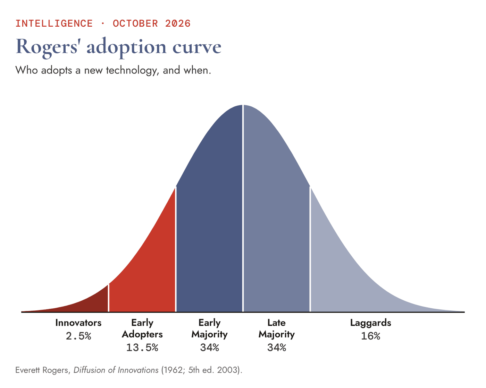
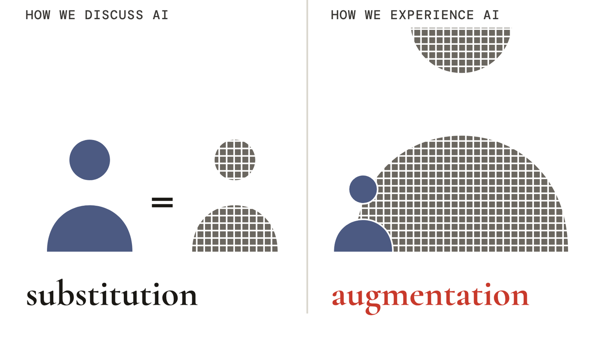
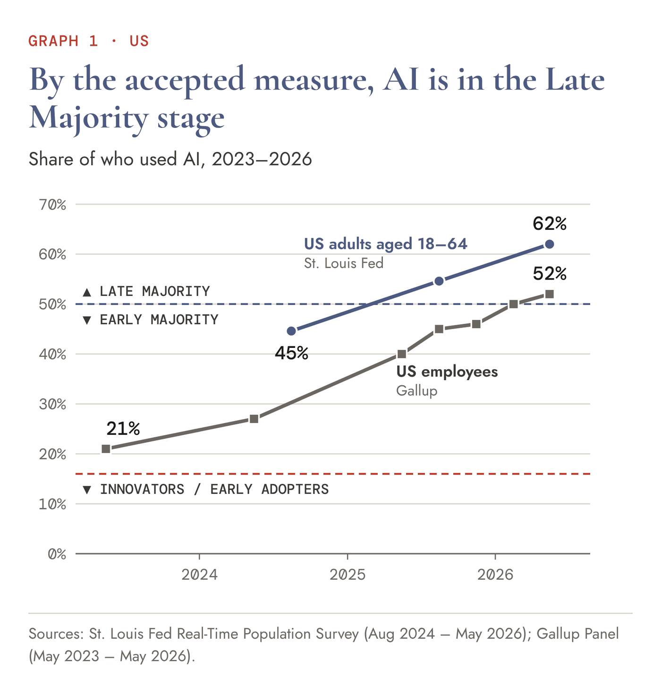
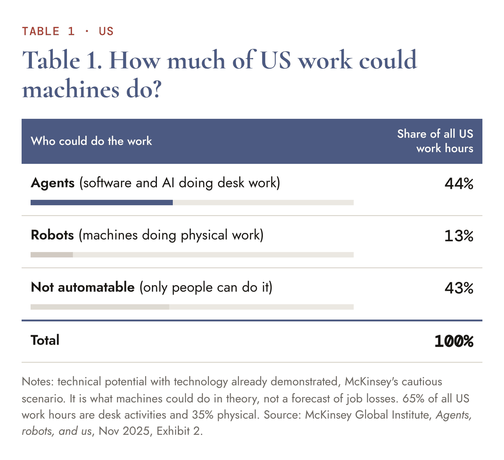
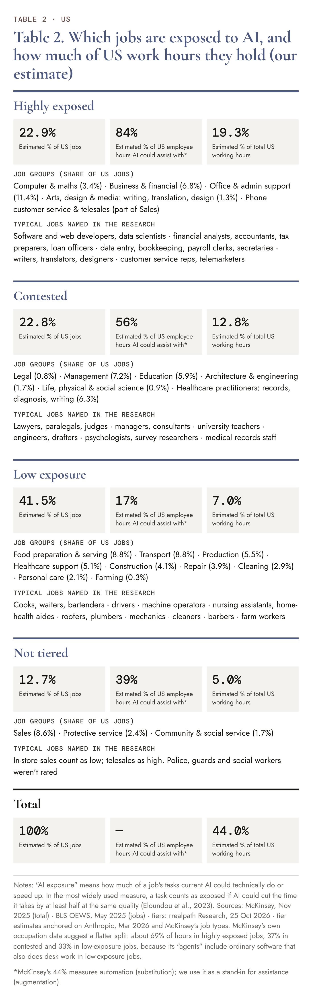
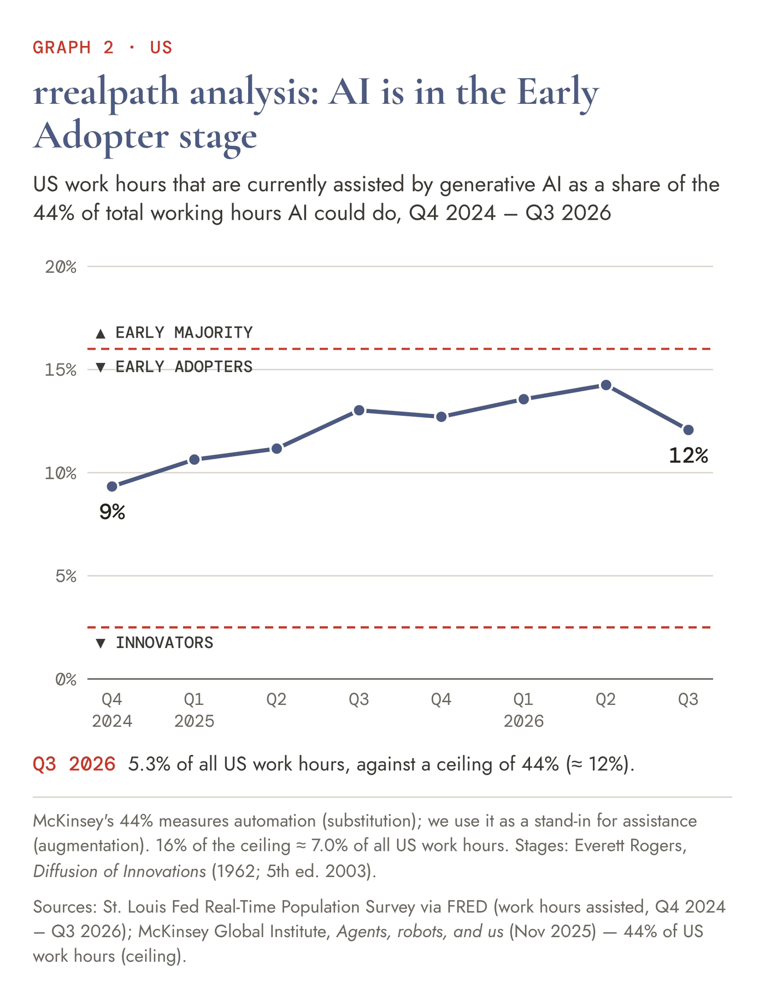
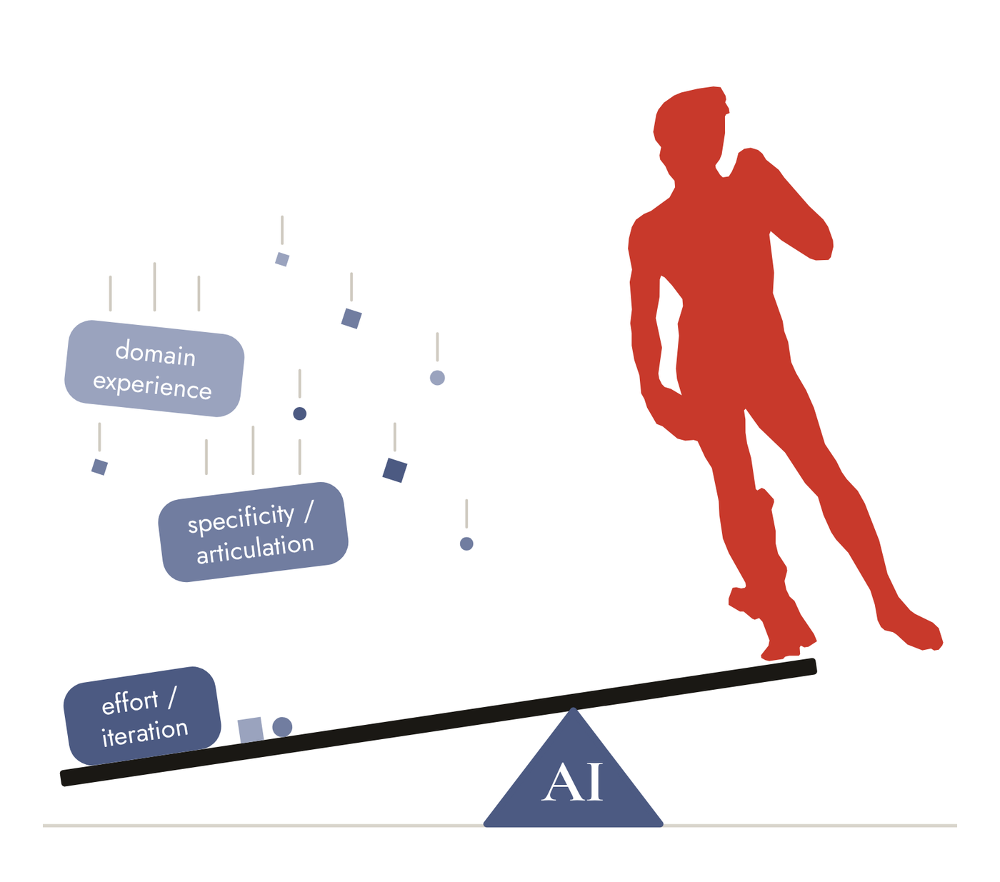

What has changed since June? The models are improving. The way people are adopting AI is continuing to gain in form and clarity.
Adoption data tells us who is using AI, how frequently, and what for. To give real context to this data, we must delve into the what for; only through understanding the business value of AI’s use cases can we assess whether adoption has measurable value.
If we count AI adoption as anyone who has ever used AI, we may be misrepresenting the facts. Using an AI model in a work-related way once or twice a week is different from using it daily for a substantial amount of time.
Understanding time savings and benefits (speed, quality, and costs of outcomes) of AI use cases is also key to grasping the true value of adoption; applications that are considered successful must deliver substantial and lasting benefits to be sustainable.
The focus of this article is to demonstrate the reality of adoption. Contrary to the widely held understanding that we are in the Late Majority stage (>50% adoption), measured by how much of the work AI could do that it actually does, we are, in fact, in the Early Adopter stage (<16% adoption).

#1 What is emerging
In the June article, we made the following opening observation about AI:
“The message the name sends is that human and artificial intelligence are interchangeable on a one-for-one basis. A machine is traditionally defined and named by the function it performs; an LLM mimics the sphere of activity that is based in language, and interacts through language, creating the appearance of intelligence.”
We then concluded with the following statement:
“The present opportunity is the possibility to harness a machine that augments a vast array of capabilities, and that has the flexibility of being many things to many people, of increasing our analytical and productive capabilities, of refocusing our limited resources –time, attention and energy–, and of tackling projects and opportunities that were previously out of reach.”
If we give credence to these two statements — both statements are grounded in fact — we can further state the following: The gap between how AI is named and how it functions creates a fundamental paradox: we discuss AI through the lens of substitution, but we experience it through the lens of augmentation.

Therefore:
The way to gauge AI’s value is to start using it, and to experience augmentation in the context of one’s own work. There are no patterns or rules about how this is achieved, and there is no expert third party that will do this for us. Gathering examples through our own experience and learning from the experiences of others is the measure.
What is becoming overwhelmingly clear is that AI’s value is in being that flexible, widely informed resource that amplifies human focus and effort; its core functional attribute is the flexible conversational interface that moulds structure and meaning out of any prompt, translating human intent into analytical leverage.
AI adoption means gaining analytical leverage:
- Improving results of analysis by expanding reach (accessing more data and knowledge that inform the decisions we need to make)
- Freeing up time for analysis by drastically reducing data collection, preparation and processing time
- Freeing up time for analysis by accelerating the completion of administrative tasks
- Writing and maintaining code and handling complex engineering tasks
- Creation and experimentation in the areas of art, literature, history, education, science, sociology, health, psychology, and more
- Faster roadmaps to improving decisions through automation
- Faster roadmaps to automation of business processes
All of the above represent real adoption scenarios. Anyone in possession of a computer and internet connection can try to use AI for any of the above.
#2 The numbers
Everett Rogers’ ‘diffusion of innovations curve’ (Diffusion of Innovations, 1962; 5th edition 2003) is based on “a decision to make full use of an innovation as the best course of action available.” Trying an idea is one step on the way, not adoption itself.
Rogers further defined diffusion: “the process in which an innovation is communicated through certain channels over time among the members of a social system.” A new idea spreads through four elements: the innovation itself, the channels that carry word of it, time, and the social system it moves through.
The present level of adoption, as reflected by anyone whose work or life has touchpoints with AI (for any marginal amount of time), including accessing AI through platform-embedded features (i.e. Gemini in Google Workspace, Copilot in Microsoft), is shown in the next graph.

To take Rogers’ analogy further, we need to understand the types of jobs that can make full use of AI as the best course of available action. Research that is focused on substitution (versus augmentation) is defining these jobs as AI-exposed. The next table shows the percentage of the US workforce for which AI’s assumed present & future capabilities are a complement (augmentation) or match (substitution).
Agents, robots, and us (McKinsey Global Institute, Nov 2025) estimates how much of today’s paid US work hours technology could, in theory, take over, by breaking about 800 occupations into their tasks. “Agents” means any software that automates desk work, AI included, and “robots” means machines that do physical work. In its cautious scenario, agents could do 44% of US work hours and robots 13%; the other 43% only people can do. McKinsey stresses that this is technical potential, “not a forecast of job losses”. It assumes about 27% of hours will be automated by 2030, and McKinsey sells AI consulting, so it has an interest in these findings.

The following 2 sources further clarify our understanding of the adoption picture. They have been chosen from among many similar examples:
United States: St. Louis Fed survey, 2025–2026 (quarterly survey of US adults; its task data comes from nearly 14,000 workers)
- In Q2 2026, 39% of employed adults aged 18–64 used AI for work in the past week. By Q3 2026, AI touched only 5.3% of all US work hours, and the time saved worked out to 2.1%
- Fewer than 3% of tasks are done with AI by over 50% of the people doing them
- An earlier round of the same survey (November 2024) found that users save 5.4% of their own hours, which the authors put at about a 1.1% productivity gain for the whole workforce
Firms in seven countries: Firm Data on AI (Yotzov, Bloom and others, 2026, revised October) — nearly 9,000 senior executives were surveyed
- 78% of their firms use AI
- 80% of executives use it regularly, but on average for only 2.1 hours a week
- They say AI added about 0.2% a year to productivity growth over the past three years, and they expect about 0.6% a year over the next 3 years
Surveys of workers in general and senior executives show marginal adoption. The percentages of people and firms show a substantial number, but the actual individual usage tells another story.
The next table attempts to define the total addressable market size, which is the share of total productivity AI can augment or substitute.

Data from the following 3 surveys completes the picture:
- Share of all US work hours assisted by AI: 5.3% (Q3 2026), St. Louis Fed, 20 October 2026
- 52% of US employees use AI at work at least a few times a year, 30% a few times a week or more, and 15% daily, Gallup, May 2026
- 49% of US adults have used an AI chatbot, and 24% use one daily, including 4% “almost constantly”, Pew, June 2026
AI presently assists 5.3% of all US work hours. The McKinsey Global Institute estimates that software and AI already demonstrated could, in theory, take over 44% of US work hours; measured against that ceiling, AI is presently used in about 12% of the work it could do.

On Rogers’ diffusion curve, this macro perspective puts us clearly within the first 16% of adoption, which is the stage of Innovators and Early Adopters. Since the applications are diverse and far-reaching, and while the Early and Late Majority are already adopting AI, the balanced perspective considers the aggregate — and the average — of the people adopting AI and the level at which they are adopting it, relative to its full potential.
#3 Why adoption progresses slowly
Why does adoption take time, and why do predictions create an environment of haste around the new opportunities? Innovators leading the development of language models continue to break new ground in the lab, and new advances always signal towards a rate of progress. The structures, systems and habits of the global economy don’t factor into the public relations message, which focuses purely on the technology’s maximum potential.
Until fairly recently, the biggest constraints were around the context window. While a basic task could be completed, one that required multiple steps or disciplines would eventually fail. Outputs that were confirmed earlier on in the logic sequence were simply forgotten, and the path to the final product was stalled or corrupted. A further constraint, still prevalent, is hallucination.
Loss of context or hallucination impacts even the simplest tasks. As use cases and projects become more ambitious, these issues begin to weigh in more heavily, and the collective effect of small fallouts creates greater obstructions, particularly for things that AI should automate and complete reliably and predictably.
In this way, the human never leaves the loop. AI may do the job, but because the result is unreliable, the human must continue in the role of the controller, always verifying the outputs. And this puts a massive constraint on a technology with arguably vast potential: if a human needs to be able to verify output, he must first understand it, and if he is to understand it, it must be presented to him in a form he is able to understand and reply to.
#4 The current adoption frontier
The brightest minds in AI today (the Innovators) are working on harnesses, and while the word harness has been in use for some time, it has only recently entered non-technical language. The simple definition of a harness is the software infrastructure and runtime scaffolding wrapped around an LLM that turns a passive text-in/text-out model into an active, working agent. This includes connecting LLMs to external environments they need (APIs, terminals, code execution environments, file systems), memory and state management, context engineering, verification & feedback loops, and guardrails & sandboxing.
The less technical minds who are building solutions with AI (the Early Adopters) are working on basic agentic solutions. While these solutions include some aspects of harnesses, they are designed to augment the capabilities and workload of one individual, versus developing solutions that need to run predictably in commercial environments. For the Early Adopter, effort and diligence incrementally improve solutions that would otherwise be defeated by loss of context and hallucinations, and progress is characterised by setbacks.

Below is an example of an improvised agentic structure, developed by an Early Adopter for publishing researched articles. Each function presents distinct challenges. Any individual wishing to publish researched articles begins from a different vantage point and with a different set of native skills. The strength of LLMs is their versatility in developing the desired utility from a unique starting point, progressing in learned and practised stages to a unique end point.
- Chief of Staff sees the whole solution. Briefs every agent, runs all releases and lets nothing go live until it has been validated against a list of requirements.
- Editorial Agent is where ideas become text. Provides copy-editing to standards the writer defines, and presents corrections and refinements to the writer one at a time.
- Website Agent puts every piece onto a website. Every change goes through a preview process, and is checked after it goes live.
- Marketing & Distribution Agent brings the right readers to the published content on all channels. Every channel is measured for reach and engagement.
- Research Agent gives the writer insights and evidence to validate arguments: sourced and dated, with strong arguments on both sides of the argument, and set in history.
- Visual & Image Agent creates, finds and files images, produces captions with source information for approval; develops and maintains templates for visual material based on the writer’s brand identity. Everything is cleared for rights, and everything is verified for legibility on any screen.
The above example identifies both the opportunity and the challenge of AI adoption. Less than a year ago this agentic solution would have been theoretically possible, but only achievable to someone with a level of technical skill; today it is achievable for most, but only the Early Adopters are putting the capabilities through their paces to develop desired solutions.
#5 The signal and the noise
What Early Adopters are demonstrating is AI’s value as a conversational interface, translating prompts into analytical leverage and accelerating the iterative rate of progress. Its power lies in its ability to serve a broad audience by bringing together start and end points that were previously termed a bridge too far.
What the noise fails to communicate is that the baseline advantage is augmentation. Anyone has access to this leverage and can improve something through the use of LLMs. What it further fails to communicate is that expert domain experience is the major differentiating factor in building great solutions and systems; an LLM’s leverage may make a project more forgiving to a novice, but complex solutions require seasoned human architects to execute. Again, AI doesn’t substitute knowledge & talent, it augments it.
AI is not the answer, it is the tool that enables a human to work on his answer. The difficulty in discussing AI adoption stems from using the language of identity to describe a tool of leverage. Until our public and organisational rhetoric shifts from what AI resembles (human intelligence) to what AI provides (leverage), people and institutions will continue to struggle with integrating it effectively.